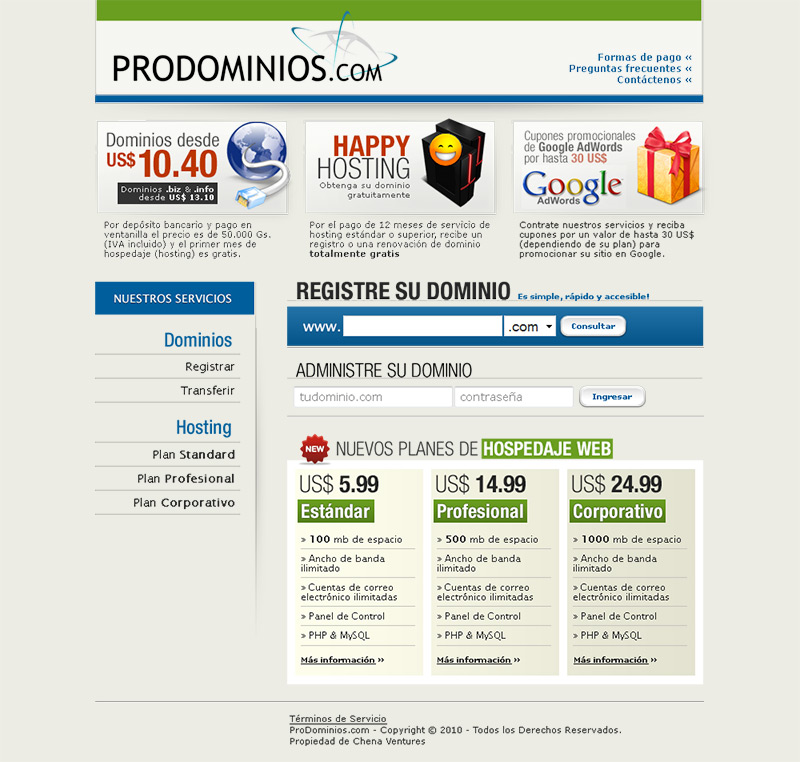

Diseño & HTML / CSS. Programación: Bruno Sacco.
Esto es aproximadamente lo que existía. Era un sitio perfectamente funcional, con bastante gente usándolo sin mayores problemas. No necesitaba un rediseño. Creo que empecé haciendo bannercitos para reemplazar los que había (el de AdWords acá es mío) y terminé sugiriendo un rediseño de todo el sitio. Porque tenía tiempo, supongo.
La gente de Prodominios me pidió que le de más destaque al tema del hospedaje, así que intenté encauzar el enfoque del sitio hacia ahí. También simplifique la paleta de colores e intenté reducir el ruido visual. Este diseño no se utilizó porque resultó ser demasiado simple. Una pena.
Esto es lo más aproximado que tengo a lo que terminó siendo el diseño final (que todavía existe, pero ahora se ve como si hubiera explotado un payaso encima). Más color, más contenido, pero manteniendo la idea general del diseño previo.
